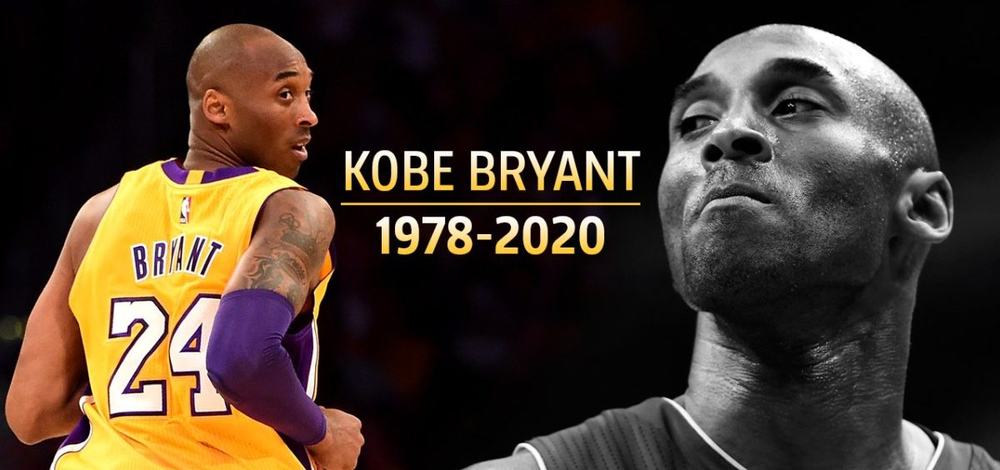

KOBE BRYANT
The American Professional Basketball Player

Beloved by all, America's greatest hero.
Here's a time line of Kobe Bryant's life:
- 1978 - Born in Philadelphia.
- 1996 - Bryant finishes his high school career as the all-time leading scorer in the history of southeastern Pennsylvania basketball.
- 1997: In his rookie season, Bryant won the Slam Dunk Contest at NBA All-Star Weekend, becoming the youngest player in NBA history to ever do so.
- 1998: Made first of his 18 All-Star appearances.
- 2000: Won his first of five NBA championships.
- 2002: Named to first of 11 All-NBA first teams, which is tied for the most in NBA history with Karl Malone and LeBron James.
- 2003: Arrested in Eagle, Colorado, as part of an investigation of a sexual assault complaint filed by a 19-year-old hotel employee.
- 2006: Scored 81 points in a game against the Toronto Raptors.
- 2008: Won his NBA MVP award.
- 2009: Won his first NBA Finals MVP award before winning it again in 2010.
- 2016: In his final NBA game, Bryant put forth a vintage performance, scoring 60 points against the Jazz, becoming the oldest player in NBA history to score 60 in a game.
- 2020: Died in a helicopter crash along with eight others, including his daughter Gianna, in California at the age of 41.
“You just can’t underestimate the power of showing up every single day and doing the work.”-- Kobe Bryant